승강기산업기사 (2018-09-15 기출문제)
1과목: 승강기개론
1. 슬랙로프 비상정지장치에 대한 설명으로 옳은 것은?
- 점진식 비상정지장치의 일종이다.
- 대용량 엘리베이터에 주로 사용된다.
- 조속기 동작과 연계되어 작동한다.
- 저속 엘리베이터에 주로 사용된다.
(정답률: 74%)

2. 다음 설명 중 틀린 것은?
- 엘리베이터는 수직 교통수단이다.
- 에스컬레이터란 오티스회사의 등록상표이었다.
- 팬터그래프식은 유압식 엘리베이터로 볼 수 없다.
- 엘리베이터의 발달과정은 기원전 236년 아르키메데스의 드럼식 권상기계가 최초라 할 수 있다.
(정답률: 89%)
3. 유입 완충기의 적용중량을 올바르게 나타낸 것은?
- 최소 적용중량 = 카자중
- 최대 적용중량 = 카자중 + 적재하중
- 최소 적용중량 = 카자중 + 85
- 최대 적용중량 = 카자중 + 적재하중 + 65
(정답률: 81%)
4. 유압식 엘리베이터에서 체인은 최소 몇 가닥이상 이어야 하는가?
- 1
- 2
- 3
- 4
(정답률: 75%)
5. 로프식 엘리베이터의 트랙션 능력을 산정할 때 고려할 요소가 아닌 것은?
- 와이어로프의 권부각
- 카의 가속도 및 감속도
- 레일의 진직도
- 카측과 균형추측의 장력비
(정답률: 87%)
6. 속도에 의한 분류 중 옳지 않은 것은?
- 360m/min - 초고속
- 240m/min - 고속
- 1⑤m/min - 중속
- 60m/min –저속
(정답률: 85%)
7. 정전 시에 카 내 예비조명장치가 필요 없는 엘리베이터의 종류에 속하는 것은?
- 승객용 엘리베이터
- 비상용 엘리베이터
- 전망용 엘리베이터
- 자동차용 엘리베이터
(정답률: 91%)
8. 그림과 같은 속도제어 회로도에서 ①, ②, ③에 해당되는 것은?
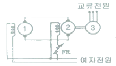
- ① 검출발전기, ② 직류전동기, ③ 유도전동기
- ① 검출발전기, ② 직류발전기, ③ 유도전동기
- ① 직류발전기, ② 유도발전기, ③ 유도전동기
- ① 직류전동기, ② 직류발전기, ③ 유도전동기
(정답률: 69%)
9. 유압식 승강기의 종류에 속하지 않는 것은?
- 직접식
- 간접식
- 팬터그래프식
- 스크류식
(정답률: 89%)
10. 정격속도가 240m/min인 엘리베이터의 조속기 과속스위치의 작동속도는?
- 정격속도의 1.2배 이하
- 정격속도의 1.3배 이하
- 정격속도의 1.4배 이하
- 정격속도의 1.5배 이하
(정답률: 71%)
11. 다음 중 로프식 일반승객용 엘리베이터의 주로프로 가장 많이 사용 되고 있는 와이어로프는?
- 8×S(19), E종, 보통 Z꼬임
- 8×F(19), E종, 보통 S꼬임
- 8×WS(25), E종, 보통 S꼬임
- 8×ES(25), E종, 보통 Z꼬임
(정답률: 87%)
12. 유압식 엘리베이터에서 고무호스의 안전율은 얼마인가?
- 4
- 6
- 8
- 10
(정답률: 74%)
13. 전망용 엘리베이터의 카에 사용할 수 있는 유리가 아닌 것은?
- 망유리
- 강화유리
- 접합유리
- 복층유리
(정답률: 74%)
14. 급제동시나 지진, 기타의 진동에 의해 주로프가 벗겨질 우려가 있는 경우에는 도르래에 로프 이탈방지장치 등을 설치하여야 한다. 다음 중 설치하지 않아도 되는 도르래는?
- 주 도르래
- 로프텐션 도르래
- 기계실 고정도르래
- 카 상부 고정도르래
(정답률: 74%)
15. 카가 충돌하는 것을 방지하기 위하여 최상, 최하층의 감속 정지할 수 있는 거리에 설치하는 안전장치는?
- 콘트롤스위치
- 인터록스위치
- 벨스위치
- 리미트스위치
(정답률: 92%)
16. 난간 폭이 1200mm인 에스컬레이터의 층고가 5100mm인 경우 적재하중은 약 몇 kg인가? (단, 에스컬레이터의 설치각도는 30°이다.)(오류 신고가 접수된 문제입니다. 반드시 정답과 해설을 확인하시기 바랍니다.)
- 2200
- 2440
- 2750
- 2800
(정답률: 57%)
17. 엘리베이터의 카 속도가 정격속도보다 빠를 때 제일 먼저 작동되는 안전장치는?
- 조속기로프
- 리미트스위치
- 조속기로프캐치
- 조속기과속스위치
(정답률: 86%)
18. 도르래의 마모량을 줄이기 위한 방법이 아닌 것은?
- 슬립거리를 줄인다.
- 접촉압력을 줄이고 경도를 낮춘다.
- 재질을 구상흑연주철을 사용할 수 있도록 한다.
- 동일 시브에 동일한 제조로트를 사용하고 한 개의 로프가 불량시 다른 로프도 교체 하여야 한다.
(정답률: 64%)
19. 수평보행기의 경사도는 몇 도[°] 이하이어야 하는가?
- 5
- 10
- 12
- 15
(정답률: 87%)
20. 아래의 주차장치중 평균 입출고시간이 가장 빠른 것은?
- 평면왕복식
- 수직순환식
- 승강기식
- 다단방식
(정답률: 81%)
2과목: 승강기설계
21. 다음 내용에서 ( ) 안에 기준으로 옳은 것은?
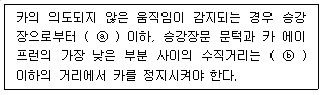
- ⓐ 1.2m, ⓑ 180 mm
- ⓐ 1.2m, ⓑ 200 mm
- ⓐ 1.4m, ⓑ 180 mm
- ⓐ 1.4m, ⓑ 200 mm
(정답률: 69%)
22. 조명전원 인입선 굵기 계산식으로 옳은 것은? (단, A : 전선의 굵기(mm2), R : 전선계수, L : 전선로의 길이(m), IL : 한 대당 조명용 회로 전 전류(A), E : 조명용 전원전압(V), e : 허용 전압강하율(%), K : 전압강하계수, N : 전원을 공용하는 병렬설치 대수(대) 이다.)
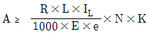
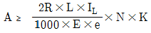
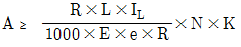
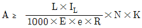
(정답률: 58%)
23. 파이널 리미트 스위치에 대한 설명으로 틀린 것은?
- 파이널 리미트 스위치와 일반종단정지장치는 동시에 작동되어야 한다.
- 파이널 리미트 스위치는 카(또는 균형추)가 완충기에 충돌하기 전에 작동되어야 한다.
- 파이널 리미트 스위치의 작동 후에는 엘리베이터의 정상운행을 위해 자동으로 복귀되지 않아야 한다.
- 파이널 리미트 스위치는 우발적인 작동의 위험 없이 가능한 최상층 및 최하층에 근접하여 작동하도록 설치되어야 한다.
(정답률: 69%)
24. 베어링 메탈 재료의 구비조건이 아닌 것은?
- 열전도가 잘 되어야 한다.
- 축과의 마찰계수가 작아야 한다.
- 축보다 단단한 강도를 가져야 한다.
- 제작이 용이하고 내부식성이 있어야 한다.
(정답률: 77%)
25. 균형추용 레일의 내진 설계 시 고려하여 할 사항으로 적합하지 않은 것은?
- 중간 빔을 설치한다.
- 레일 브래킷의 간격을 줄인다.
- 균형추에 중간 스톱퍼를 설치한다.
- 균형추 쪽에 타이브래킷을 설치한다.
(정답률: 72%)
26. 직류 엘리베이터에서 가속전류에 대한 변압기의 허용 전압강하율은 최대 몇 % 이하이어야 하는가?
- 2
- 4
- 6
- 8
(정답률: 60%)
27. 기계실의 구조에 대한 설명 중 틀린 것은?
- 기계실의 실온은 +5℃에서 +40℃ 사이에서 유지되어야 한다.
- 기계실은 당해 건축물의 다른 부분과 내화구조로 구획하고 기계실의 내장은 준불연재료 이상으로 마감되어야 한다.
- 조명스위치는 쉽게 조명을 점멸할 수 있도록 기계실 출입문 가까이에 적절한 높이로 설치되어야 한다.
- 출입문은 폭 0.6m 이상, 높이 2m 이상의 금속제 문이어야 하며 기계실 내부로 완전히 열리는 구조이어야 한다.
(정답률: 81%)
28. 엘리베이터에 사용하는 완충기(Buffer)의 설치위치로 가장 적절한 것은?
- 균형추의 주행로 하부 끝에만 설치한다.
- 카 하부와 균형추의 주행로 하부 끝에 설치한다.
- 카 하부와 균형추의 주행로 상부 끝에 설치한다.
- 기계실 하부와 카 하부에 설치한다.
(정답률: 85%)
29. 와이어로프의 구조와 관계가 없는 것은?
- 소선
- 심강
- 스트랜드
- 스트레이너
(정답률: 88%)
30. 가이드레일의 치수 결정에 관계가 가장 적은 것은?
- 지진
- 가이드 슈
- 비상정지장치
- 하중의 적재 방법
(정답률: 66%)
31. 엘리베이터 카틀 및 카바닥의 설계에 관한 설명으로 틀린 것은?
- 인장, 비틀림, 휨을 받는 부품에는 주철은 사용하지 않아야 한다.
- 카틀의 부재와 카바닥 사이의 연결부위는 리벳이나 볼트로 체결 또는 용접을 한다.
- 카바닥과 카틀의 구조부재의 경사진 플랜지에 사용되는 너트는 스프링 와셔에 얹혀야 한다.
- 현수도르래가 복수인 경우 도르래 사이의 로프로 인하여 발생되는 압축력을 고려하여야 한다.
(정답률: 70%)
32. 카 상부체대나, 균형추에 주로 사용하는 주로프 끝부분의 로프 단말처리 방식이 아닌 것은?
- 로프 1가닥 마다 카 상부체대나, 균형추에 로프를 용접하는 방식
- 로프 1가닥 마다 끝부분의 로프소켓에 바빗채움을 하는 방식
- 로프 1가닥 마다 끝부분의 체결식 로프소켓에 체결하는 방식
- 권동식이나 덤웨이터 등에 1가닥 마다 끝부분을 클램프로 고정하는 방식
(정답률: 77%)
33. 공급주파수가 60Hz이고 극수가 6극인 동기전동기의 회전수는 몇 rpm 인가?
- 1200
- 1250
- 1500
- 1800
(정답률: 44%)
34. 엘리베이터의 안전접점에 대한 설명으로 틀린 것은?
- 회로차단장치의 확실한 분리에 의해 작동되어야 한다.
- 전도체 재질이 마모되어도 접점의 단락이 발생되지 않아야 한다.
- 외함이 IP 4X 이상의 보호등급인 경우에는 정격절연전압이 500V 이상이어야 한다.
- 다수의 브레이크 접점의 경우 접점이 분리된 후 접점 사이의 거리는 2mm 이상이어야 한다.
(정답률: 74%)
35. 그림과 같은 브레이크에서 브레이크 막대에 작용하는 힘 F는? (단, P : 브레이크 드럼과 브레이크 블록 사이의 압력(kg), μ : 브레이크 드럼과 브레이크 블록 사이의 마찰계수이다.)
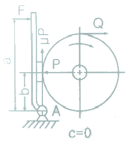
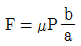
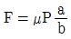
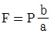
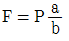
(정답률: 65%)
36. 유압식엘리베이터에 있어서 작동유의 압력맥동을 흡수하여 진동 · 소음을 감소시키기 위하여 사용되는 것은?
- 필터
- 스톱밸브
- 사이렌서
- 역류 제지밸브
(정답률: 88%)
37. 5분간 수송능력 280명, 5분간 전교통 수요가 2800명일 경우 필요한 엘리베이터 대수는?
- 5
- 10
- 15
- 20
(정답률: 86%)
38. 일반적인 승객용 엘리베이터의 카에 대한 설명으로 틀린 것은?
- 카 출입구의 유효 높이는 2m 이상이어야 한다.
- 카 내부의 유효 높이는 2.5m 이상이어야 한다.
- 카의 벽, 바닥 및 지붕은 불연재료로 만들거나 씌워야 한다.
- 카의 벽, 바닥 및 지붕은 충분한 기계적 강도를 가져야 한다.
(정답률: 74%)
39. 그림은 전동기제어회로의 일부이다. A, B, C 스위치 동작으로 옳은 것은? (단, A, B, C는 스위치, X는 전동기를 운전하는 계전기이다.)
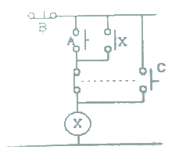
- A:전동기 기동(운전), B:전동기 정지, C:전동기 촌동운전
- A:전동기 기동(운전), B:전동기 촌동운전, C:전동기 정지
- A:전동기 촌동운전, B:전동기 기동(운전), C:전동기 정지
- A:전동기 촌동운전, B:전동기 정지, C:전동기 기동(운전)
(정답률: 69%)
40. 정격속도가 90m/min, 승강행정이 40m이고 부가시간이 78초인 17인승 엘리베이터의 일주시간은 얼마인가?
- 156초
- 117초
- 131.3초
- 127.2초
(정답률: 59%)
3과목: 일반기계공학
41. 점도를 나타내는 단위는 푸아즈(P)라 하는데 1푸아즈에 대한 설명으로 옳은 것은?
- 유막두께 1cm, 판의 면적 1cm2, 판의 속도 1cm/s로 움직이는 데 필요한 힘이 1다인(dyne) 경우
- 유막두께 1cm, 판의 면적 1cm2, 판의 속도 1cm/s로 움직이는 데 필요한 힘이 1000다인(dyne) 경우
- 유막두께 10cm, 판의 면적 10cm2, 판의 속도 10cm/s로 움직이는 데 필요한 힘이 10다인(dyne) 경우
- 유막두께 10cm, 판의 면적 10cm2, 판의 속도 10cm/s로 움직이는 데 필요한 힘이 1000다인(dyne) 경우
(정답률: 70%)
42. 유압회로에서 유체의 속도가 압력손실에 미치는 영향은?
- 속도에 세제곱에 비례하여 압력손실도 증가한다.
- 속도의 제곱에 비례하여 압력손실도 증가한다.
- 속도의 제곱에 비례하여 압력손실도 감소한다.
- 속도에 비례하여 압력손실도 감소한다.
(정답률: 66%)
43. 너트의 풀림을 방지하는 방법이 아닌 것은?
- 2중 너트
- 스프링 와셔
- 분할 핀
- 캡 너트
(정답률: 84%)
44. 용해된 금속을 금형에 고압으로 주입하여 주물을 만드는 주조법은?
- 칠드주조법
- 셀몰드법
- 다이캐스팅법
- 원심주조법
(정답률: 78%)
45. 길이 L(m)인 단순보의 중앙에 집중하중 P(N)가 작용할 때 최대 굽힘모멘트는?
- PL/2
- PL/4
- PL/6
- PL/8
(정답률: 63%)
46. 2개의 금속편 끝을 각각 용융점 근처까지 가열한 후 양끝을 접촉시키고 축 방향으로 압력을 가하여 접합시키면 용접은?
- 단조
- 압출
- 압연
- 압접
(정답률: 76%)
47. 주조용 마그네슘 합금으로 희토류원소를 첨가하여 고온강도의 저하를 감소시킨 것은?
- Mg - Al - Mn계
- Mg - Zn - Zr계
- 다이캐스트 합금
- Mg - Zr - REM계
(정답률: 66%)
48. 그림과 같은 스프링장치에서 스프링 상수가 k1=10N/cm, k2=20N/cm 일 때, 무게 W에 의하여 위쪽 스프링의 길이는 2cm 늘어나고, 아래 쪽의 스프링은 2cm 압축되었다면 추의 무게(W)는 약 몇 N인가?
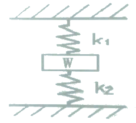
- 13.3
- 33.3
- 40
- 60
(정답률: 53%)
49. 그림에서 강판의 두께는 10mm, 펀치의 직경은 20mm이고 펀치가 누르는 힘을 10kN이라 할 때 강판에 발생하는 전단응력은 약 몇 N/mm2인가?(문제 복원 오류로 그림이 없습니다. 정확한 그림 내용을 아시는분 께서는 자유게시판에 등록 부탁 드립니다. 정답은 1번 입니다.)
- 15.9
- 24.9
- 7.9
- 31.9
(정답률: 46%)
50. 강을 담금질 할 때 담금질액 중 물은 몇 ℃ 이상이 되면 냉각효과가 크게 변하는가?
- 10℃
- 40℃
- 70℃
- 100℃
(정답률: 71%)
51. 유성형 내면연삭기에 대한 설명으로 옳지 않은 것은?
- 가공 중 안지름 측정이 곤란하다.
- 사용되는 숫돌의 바깥지름은 구멍의 지름보다 작아야 한다.
- 외면연삭보다 숫돌의 마모가 적다.
- 숫돌의 외경이 작아 숫돌의 회전수를 높게 해야 절삭속도를 높일 수 있다.
(정답률: 62%)
52. 핸드 탭으로 나사가공을 할 경우 최종으로 사용하는 탭은?
- 1번 탭
- 2번 탭
- 3번 탭
- 4번 탭
(정답률: 71%)
53. 아크 용접 시 용접전류가 아주 낮을 때 생기는 결함이 아닌 것은?
- 언더컷
- 오버랩
- 용입 부족
- 슬래그 섞임
(정답률: 77%)
54. 양단을 완전히 고정한 0℃의 구리봉 온도를 50℃로 높였을 때 봉의 내부에 생기는 압축응력은 약 몇 N/mm2 인가? (단, 구리 봉의 세로 탄성계수는 9100 N/mm2, 선팽창계수는 0.000016/℃ 이다.)
- 10.23
- 8.58
- 7.28
- 6.28
(정답률: 62%)
55. 유압펌프의 입구와 출구에서 진공계 또는 압력계의 지침이 크게 흔들리고 송출량이 급변하는 현상은?
- 수격현상
- 서징현상
- 언로더현상
- 캐비테이션
(정답률: 68%)
56. 나사의 끝을 침탄 처리한 작은 나사로서, 주로 얇은 판의 연결에 사용하며, 암나사를 만들지 않고 드릴 구멍에 끼워 암나사를 내면서 조여지는 나사는?
- 볼 나사 (ball screw)
- 세트 스크류 (set screw)
- 태핑나사 (tapping screw)
- 작은 나사 (machine screw)
(정답률: 74%)
57. 유압기계에서 작동유에 관한 설명으로 틀린 것은?
- 압축성이 클 것
- 물과 섞이지 말 것
- 부식을 방지할 것
- 윤활성이 좋을 것
(정답률: 82%)
58. 고속도강의 대표적인 재료는 18-4-1형이라고 불리는 것인데, 이 재료의 표준 조성으로 옳은 것은?
- W(18%) - Cr(4%) - V(1%)
- W(18%) - V(%) - Co(%)
- W(18%) - Cr(4%) - Mo(1%)
- Mo(18%) - Cr(4%) - V(1%)
(정답률: 73%)
59. 기어에 관한 설명으로 옳지 않은 것은?
- 헬리컬기어는 이가 나선으로 된 원통기어
- 래크기어는 반지름이 무한대인 원통기어의 일부분
- 스퍼기어는 교차되는 2축 간에 운동을 전달하는 원뿔형의 기어
- 내접기어는 스퍼 기어와 맞물리며 원통의 안쪽에 이가 만들어져 있는 기어
(정답률: 66%)
60. 비틀림을 받는 원형 축에서 축의 지름을 d, 비틀림 모멘트를 T라고 할 때 최대전단응력 τ를 구하는 식은?
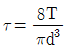
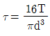
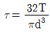
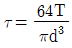
(정답률: 63%)
4과목: 전기제어공학
61. 물체의 위치, 방위, 자세 등의 기계적 변위를 제어량으로 해서 목표값의 임의의 변화에 추종하도록 구성된 제어계는?
- 공정 제어
- 정치 제어
- 프로그램 제어
- 추종 제어
(정답률: 69%)
62. 다음 블록선도 중 안전한 계는?(문제 오류로 모든 그림이 같습니다. 정확한 그림 내용을 아시는분 께서는 자유게시판에 그림 작성 부탁 드립니다. 정답은 2번 입니다.)
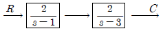
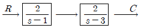
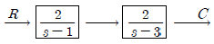
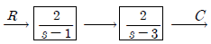
(정답률: 73%)
63. 자동 제어계의 출력 신호를 무엇이라 하는가?
- 제어량
- 조작량
- 동작신호
- 제어 편차
(정답률: 63%)
64.
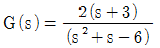
의 특성 방정식 근은?- -3
- 2, -3
- -2, 3
- 3
(정답률: 72%)
65. 다음 중 압력을 변위로 변환시키는 장치로 옳은 것은?
- 다이어프램
- 노즐플래퍼
- 차동변압기
- 전자석
(정답률: 57%)
66. 유도전동기의 원선도 작성에 필요한 기본량이 아닌 것은?
- 무부하 시험
- 저항 측정
- 회전수 측정
- 구속 시험
(정답률: 54%)
67. ‘회로망에서 임의의 접속점에 유입하는 전류와 유출하는 전류의 총합은 0이다’라는 법칙은 무엇인가?
- 쿨롱의 법칙
- 렌쯔의 법칙
- 키르히호프의 법칙
- 패러데이 법칙
(정답률: 77%)
68. 진공 중에서 크기가 10-3[C]인 두 전하가 10[m]거리에 있을 때 그 전하 사이에 작용하는 힘은 몇 [N]인가?
- 90
- 18
- 9
- 1.8
(정답률: 51%)
69. 220V, 1kW의 전열기에서 전열선의 길이를 2배로 늘리면 소비전력은 늘리기 전의 전력에 비해 몇 배로 변화하는가?
- 0.25
- 0.5
- 1.25
- 1.5
(정답률: 72%)
70. 다음 블록선도에서 틀린 식은?
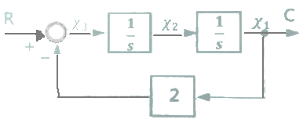
- x3(t)=r(t)-2c(t)
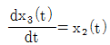
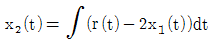
- x1(t)=c(t)
(정답률: 57%)
71. 폐루프 제어계의 장점이 아닌 것은?
- 생산품질이 좋아지고, 균일한 제품을 얻을 수 있다.
- 수동제어에 비해 인건비를 줄일 수 있다.
- 제어장치의 운전, 수리에 편리하다.
- 생산속도를 높일 수 있다.
(정답률: 67%)
72. 디지털 제어시스템에서 다루는 기본적인 입력이산신호의 종류가 아닌 것은?
- 단위 스텝신호
- 단위 교번신호
- 단위 램프신호
- 단위 비례적분신호
(정답률: 63%)
73. 피드백제어로서 서보기구에 해당하는 것은?
- 석유화학공장
- 발전기 정전압장치
- 전철표 자동판매기
- 선박의 자동조타
(정답률: 76%)
74. 그림과 같은 회로에서 R=4[Ω], XL=8[Ω], Xc=5[Ω]의 RLC직렬회로에 20V의 교류를 가할 때 용량성 리액턴스 Xc에 걸리는 전압[V]은?
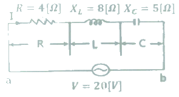
- 67
- 32
- 20
- 16
(정답률: 55%)
75. 제어동작에 대한 설명 중 틀린 것은?
- ON-OFF동작 : 제어량이 설정값과 어긋나면 조작부를 전폐 또는 전개하는 것
- 비례동작 : 검출값 편차의 크기에 비례하여 조작부를 제어하는 것
- 적분동작 : 적분값의 크기에 비례하여 조작부를 제어하는 것
- 미분동작 : 미분값의 크기에 비례하여 조작부를 제어하는 것
(정답률: 57%)
76. 220[V] 3상 4극 60[Hz]인 3상 유도전동기가 정격전압, 정격 주파수에서 최대 회전력을 내는 슬립은 16[%]이다. 200[V] 50[Hz]로 사용할 때 최대 회전력 발생 슬립은 약 몇 [%]가 되는가?
- 15.6
- 17.6
- 19.4
- 21.4
(정답률: 42%)
77. 역률 80[%]의 부하의 유효 전력이 40[kW]이면, 무효 전력은 몇 [kVar]인가?
- 100
- 60
- 40
- 30
(정답률: 42%)
78. 제어기기 중 전기식 조작기기에 대한 설명으로 옳지 않은 것은?
- PID 동작이 간단히 실현된다.
- 감속장치가 필요하고 출력은 작다.
- 장거리 전송이 가능하고 늦음이 적다.
- 많은 종류의 제어에 적용되어 용도가 넓다.
(정답률: 65%)
79. 종류가 다른 금속으로 폐회로를 만들어 두 접속점에 온도를 다르게 하면 전류가 흐르게 되는 것은?
- 펠티어 효과
- 평형현상
- 제벡효과
- 자화현상
(정답률: 74%)
80. 3상 4선식 불평형부하의 경우, 단상전력계로 전력을 측정하고자 할 때 몇 대의 단상전력계가 필요한가?
- 2
- 3
- 4
- 5
(정답률: 69%)